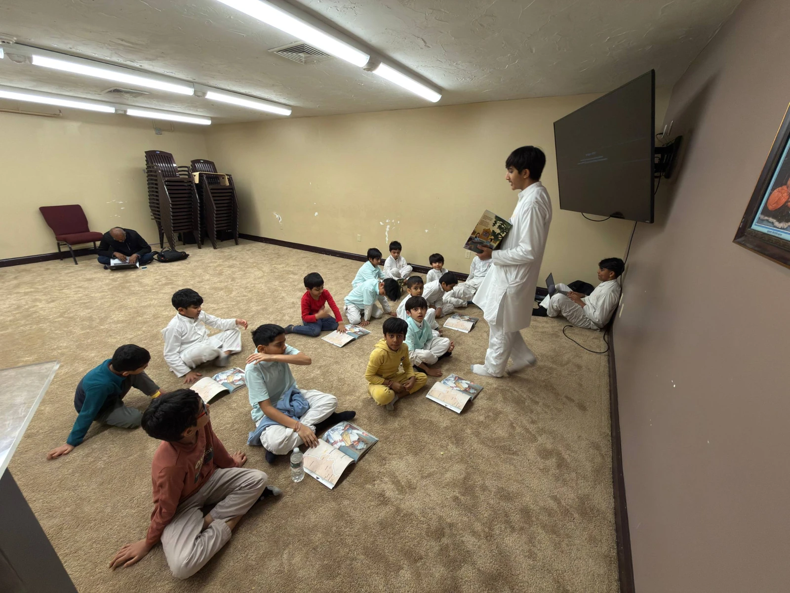
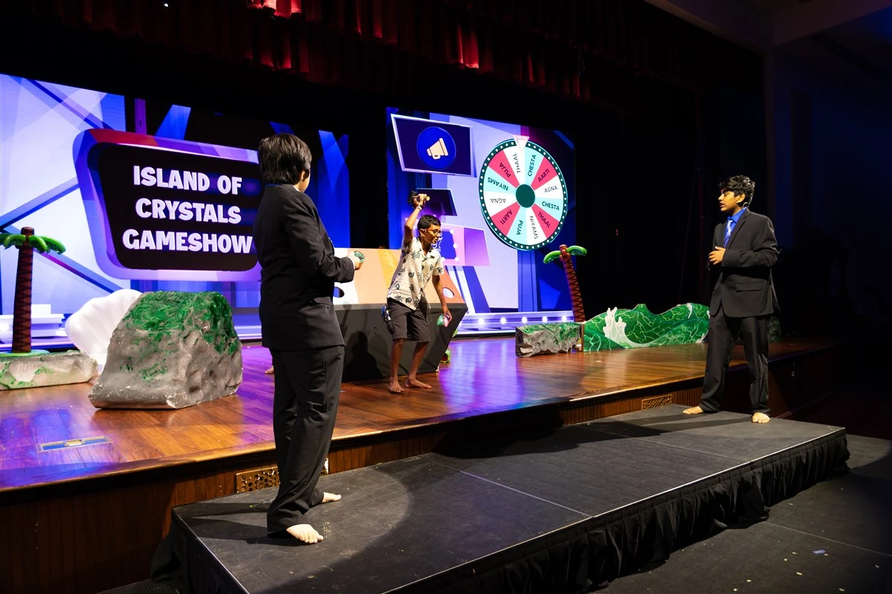
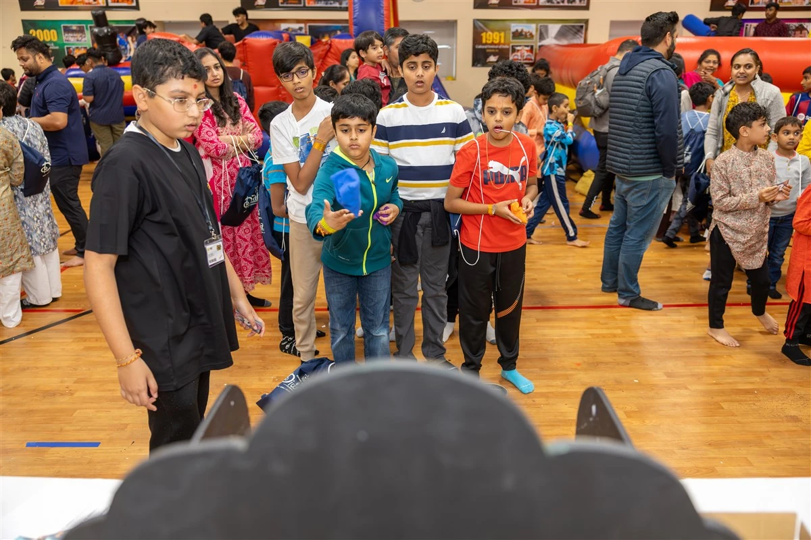
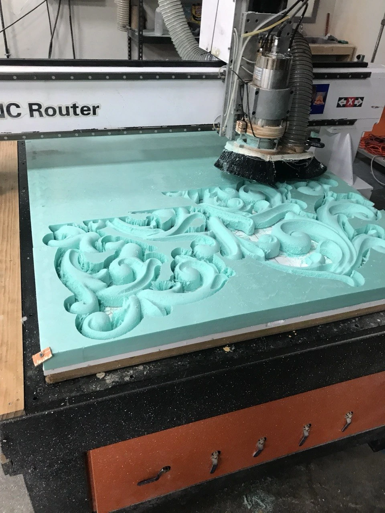
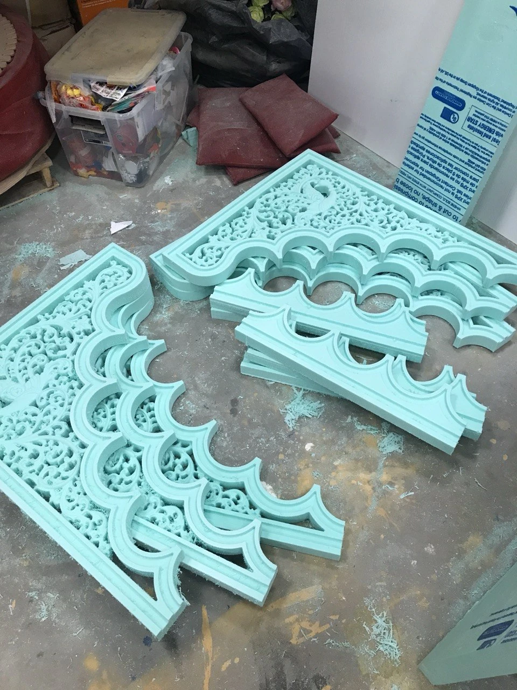

Experience
Most of what I do outside class falls into three groups: running youth programs at the mandir, fabrication and technical work, and school teams. The leadership and the fabrication are where I have put the most hours, so those two carry the evidence.
Leadership and service
Weekly assemblies, an annual camp, and a Diwali program.
Youth Activities Coordinator, BAPS Bal Mandal
Lowell, MA · August 2022 to present
I run weekly assemblies attended by more than 70 children. I teach lessons about Hinduism along with virtues, values, and morals that they can carry with them as they grow.

I help lead the annual Bal Balika Summer Shibir, a three-day camp for children in grades 4 through 8 that teaches religious values through activities, stage programs, and breakout sessions. More than 1,000 participants take part. I worked on the 2023, 2024, and 2025 shibirs, putting together the stage program and coordinating between the food services, hall setup, stage, and activity teams.

I also help lead the Kids Diwali Celebration at our local temple, where around 400 to 500 children come each year for a stage program, activities, food, and arcade-style games built around Diwali and the Hindu values taught at the temple. I helped lead it in 2023, 2024, and 2025, and I plan to continue in 2026.

Volunteer, BAPS Charities · Lowell, MA · June 2017 to present
Health awareness events, community cleanups, and food drives. On event days that means setup, registration, crowd coordination, and outreach.
Technical and work
Digital fabrication, and earlier work before that.
Full-Time Volunteer, BAPS Akshardham
Robbinsville, NJ · July 2023 to October 2023
Full-time digital fabrication on a large cultural build. I drew architectural components in CorelDRAW and Adobe Illustrator, turned those drawings into CNC-ready files, then ran the industrial CNC cutting systems and hot-wire machinery that cut the components from wood, PVC, and styrofoam. I worked on both sides of the process, from preparing the drawings and machine files to operating the equipment that cut the components.


Technical Operations Intern, Stash Proxies · Lowell, MA · January 2021 to January 2022
Monitored proxy infrastructure serving 500+ monthly active users, and helped test IP performance, targeting accuracy, and server health.
Fulfillment & Logistics Associate, Dasbhav LLC · Lowell, MA · November 2020 to January 2022
Shipping, packaging, labeling, pickups, tracking, inventory, and replenishment reports. When I found inefficiencies in how orders were put together, I set up a more streamlined packaging procedure.
Teams and activities
Student Athlete, Chelmsford Track and Field
November 2023 to present
I compete in the high jump, the 55m hurdles, and the 110m hurdles, indoor and outdoor season.
Robotics Club · September 2023 to June 2024
Designed, built, and tested robots for VEX Robotics competitions.
Artificial Intelligence Club · September 2025 to present
Group discussions about AI tools and where they get used, and hands-on projects built with other members.